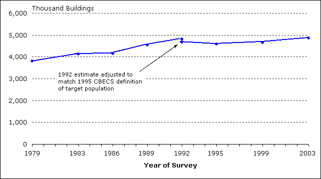
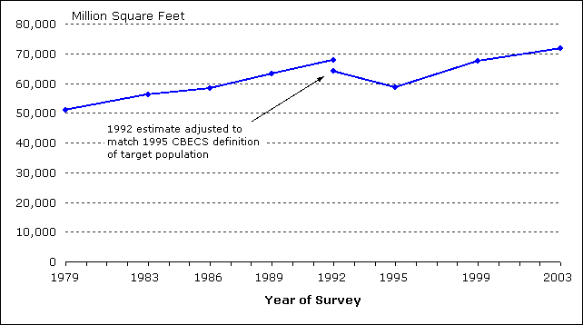
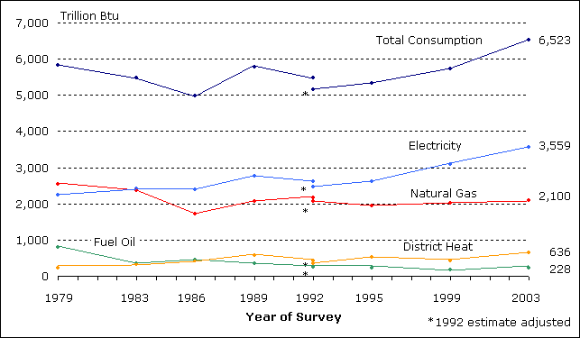
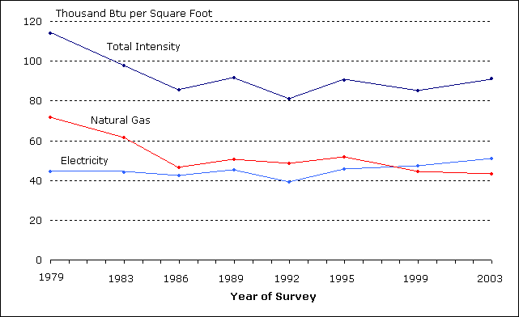

Trends in Commercial Buildings Sector—1979 to 2003
Since the first CBECS in 1979, the commercial buildings sector has increased in size.From 1979 to 2003:
- The number of commercial buildings increased from 3.8 million to 4.9 million (Figure 3).
- The amount of commercial floorspace increased from 51 billion to 72 billion square feet (Figure 4).
- Total energy consumed increased from less than 5,900 trillion to more than 6,500 trillion Btu (Figure 5).
- Electricity and natural gas consumption, nearly equal in 1979, diverged; electricity increased to more than 3,500 trillion Btu by 2003 while natural gas declined to 2,100 trillion Btu.
Figure 3. The number of commercial buildings increased from 1979 to 2003.
Source: Energy Information Administration, Commercial Buildings Energy Consumption Survey.
Figure 4. Total floorspace in commercial buildings increased from 1979 to 2003.
Source: Energy Information Administration, Commercial Buildings Energy Consumption Survey.
Because CBECS is a sample survey, each estimate has sampling error associated with it and the statistical significance of estimates have to be considered when comparing estimates (see Statistical Detail and Estimation of Standard Errors for additional information).
Energy Consumption
In 2003, total energy consumed by the commercial buildings sector exceeded 6,500 trillion Btu (6,523 ± 511 trillion Btu) for the first time since EIA began collecting these data in 1979 (Figure 5). From 1979 to 1999, estimates of total consumption varied between a high of slightly more than 5,800 trillion Btu in 1979 to a low of just under 5,000 trillion Btu in 1986. But when the uncertainties of the estimates are considered, the differences are not statistically significant. With the addition of 2003 CBECS data, we can confirm a statistically significant increase in consumption between 1995 and 2003. (Note that energy consumption for heating and cooling are affected by the actual weather for each of the survey years.)
Electricity and natural gas have been, and continue to be, the two dominant energy sources in the commercial buildings sector. Together they account for more than 87 percent of total energy consumed. Electricity consumption increased from just over 2,200 trillion Btu in 1979 to more than 3,500 trillion in 2003. Along with that increase in consumption, electricity increased its share of total energy consumed from 38 percent in 1979 to 55 percent in 2003.
The increase in the amount of electricity consumed is consistent with the increased use of existing types of electrical equipment and introduction of new types of equipment in commercial buildings. Because of the wide range of activities in the sector, we find the adoption and increased use of equipment such as personal computers, office equipment (servers, printers, copiers, and fax machines), telecommunications equipment, and medical diagnostic and monitoring equipment. In addition to electricity consumed directly by that equipment, many of these types have cooling, humidity control, and ventilation requirements that also increase electricity consumption.
Figure 5. In the first two cycles of CBECS, consumption of electricity and natural gas were about equal, but since 1986, electricity has exceeded natural gas.
Source: Energy Information Administration, Commercial Buildings Energy Consumption Survey.
The amount of natural gas consumed by commercial buildings declined from a high in 1979 of 2,550 trillion to a low of 1,723 trillion in 1986. Since 1989, natural gas consumption has been nearly constant, at around 2,000 trillion Btu. As a percentage of total consumption, natural gas consumption declined from 44 percent in 1979 to 32 percent in 2003.
Commercial buildings consumed less than 1,000 trillion Btu of either fuel oil or district heat across the 1979 to 2003 period. In 1979, buildings consumed more than three times as much energy from fuel oil as district heat, but by 2003, energy from fuel oil was less than 40 percent of district heat.
While the total amount of energy consumed by commercial buildings increased, the amount of commercial floorspace increased even more, and therefore the intensity of total energy use (measured in thousand Btu per square foot) declined (Figure 6). In 1979, total energy intensity was 114 thousand Btu per square foot of commercial floorspace, but by 1986, it had declined to 86 thousand Btu per square foot. Since 1986, it has remained in the 81 to 92 thousand Btu range.
The energy intensities of electricity and natural gas show contrasting trends. For the first four CBECS surveys, electricity intensity remained in a narrow range from 42 to 45 thousand Btu per square foot. In 1992, the electricity estimate dropped to 39 thousand and then began a steady increase to 51 thousand in 2003 as demand for more services that use electricity increased. Natural gas intensity declined sharply from 1979 to 1986 and has remained in the 43 thousand to 52 thousand Btu per square foot range since.
Figure 6. Total energy intensity in commercial buildings has declined since 1979.
Source: Energy Information Administration, Commercial Buildings Energy Consumption Survey.
Overview of Commercial Buildings, 2003
Introduction
Trends in Commercial Buildings Sector—1979 to 2003
Major Characteristics of All Commercial Buildings in 2003
2003 CBECS Detailed Tables
Building Characteristics Tables
Consumption and Expenditures Tables
End-Use Consumption Tables
Return to: CBECS Home Page
Specific questions may be directed to:
Alan Swenson
Alan Swenson
Date released: December, 2008